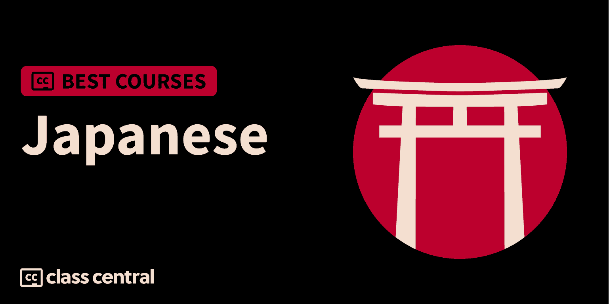

दो हजार तेईस में लेने के लिए 10 सर्वश्रेष्ठ जापानी पाठ्यक्रम
चाहे आप जापान की यात्रा करना चाहते हैं, वहां एक नया जीवन शुरू करना चाहते हैं, या उपशीर्षक के बिना एनीम देखना चाहते हैं, जापानी सीखने के लिए यहां सबसे अच्छे ऑनलाइन पाठ्यक्रम हैं।

इस प्रकार, मैं आपके लिए दस सर्वश्रेष्ठ निःशुल्क और समान जापानी ऑनलाइन पाठ्यक्रम फिर भी हूँ चालीस + जापानी पाठ्यक्रम हमारे कैटलॉग पर एक अच्छी तरह से परिभाषित कार्यप्रणाली का पालन करके जिसे आप नीचे पा सकते हैं।
लेकिन अगर आप सीधे संदेश पर जाना चाहते हैं, तो यहां मेरी शीर्ष दस पसंद हैं। संबंधित खंड पर जाने के लिए आप पाठ्यक्रम पर क्लिक कर सकते हैं:
| अवधि | कार्य | विस्तार |
| एक. आसान जापानी (एनएचके वर्ल्ड-जापान) | अड़तालीस घंटा | वर्ग मुक्त , जापानी, पत्र और संस्कृति सीखने के लिए ट्यूटोरियल्स की ऑल-इन-वन श्रृंखला। |
| दो. पूरा जापानी पाठ्यक्रम: शुरुआती लोगों के लिए जापानी सीखें (उदमी) | पच्चीस घंटे | शुरुआती लोगों के लिए अभ्यास के साथ जापानी शब्द और वाक्य सीखने के लिए व्यापक पाठ्यक्रम |
| तीन. जापानी भाषा पाठ (JapanSocietyNYC) | दो-तीन घंटे | छोटा मुक्त नौसिखियों के लिए पाठ्यक्रम जापानी भाषा के मूल तत्वों को सीखने के लिए |
| चार. ऑनलाइन जापानी पाँच पाठ्यक्रम (सभी एकपाँच पाठ) (उदमी) | इक्कीस घंटे | पर्याप्त अभ्यास के साथ जेएलपीटी एनपाँच जापानी में ऋण प्राप्त करने के लिए वर्ष शिक्षार्थियों के लिए विस्तृत पाठ्यक्रम |
| पाँच. शुरुआती लोगों के लिए जापानी कोर्स (अक्षर, अक्षर) (उदमी) | छह घंटे | प्रारंभिक जापानी में एक मजबूत छाया बनाने के लिए बिल्कुल शुरुआती लोगों के लिए ग्रेट कोर्स |
| छह. नौसिखियों के लिए जापानी सीखें: परम एक सौ-पाठ पाठ्यक्रम (उदमी) | आठ घंटे | बहुत अभ्यास के साथ जापानी बोलना और लिखना सीखने के लिए नौसिखियों के लिए एक सौ-पाठ पाठ्यक्रम |
| सात. JLPT के लिए Nak文字語彙 (日本語の森) | तीन -चार घंटे | अग्रवर्ती स्तर मुक्त JLPT Nएक शब्दावली में महारत हासिल करने के लिए अनुभवी शिक्षार्थियों के लिए पाठ्यक्रम |
| आठ. MISJ WELCOME PROGRAM (Udemy) पर आधारित नौसिखियों के लिए जापानी | अट्ठाईस घंटा | शुरुआती अभ्यास के साथ जापानी बोलना, पढ़ना और लिखना सीखने के लिए व्यापक पाठ्यक्रम |
| नौ. निहंगो मास्टर | ना | जापानी सीखने के लिए पॉडकास्ट, समुदाय, ब्लॉग और पाठों वाला शानदार मंच |
| दस. JLPT Nपाँच (मीसा के साथ जापानी डायनामाइट) | दस-12 घंटे | JLPT Nपाँच, Nचार और N3 व्याकरण और सीखने के लिए शुरुआती लोगों के लिए नि: शुल्क पाठ्यक्रम |
जापानी (भाषा) क्या है?
जापानी (日本語, Nihongo) मुख्य रूप से जापान के लोगों द्वारा बोली जाने वाली मूल भाषा है जहां यह राष्ट्रीय भाषा है। जापानी के तहत आता है जापान का या जापानी-युक्तयुआन भाषा परिवार।
हीरागाना, कटकाना और कांजी
जापानी भाषा तीन लिपियों का उपयोग है: हीरागाना, कटकाना और कांजी। उनमें से प्रत्येक पर एक त्वरित दृष्टि डालें।
हीरागाना कार्यात्मक शब्दों और कणों को लिखने के लिए प्रयोग किया जाता है। हीरागाना मूल जापानी वर्णमाला की तरह है और इसमें छियालीस वर्ण होते हैं।
काताकाना विदेशी शब्दों और नामों को लिखने के लिए प्रयोग किया जाता है। कटकाना लगभग छियालीस वर्णों वाले हीरागाना जैसा ही है, सिवाय इसके कि इसे थोड़ा अलग तरीके से लिखा गया है।
कांजी देशी जापानी शब्दों या चीनी मूल के शब्दों को लिखने के लिए प्रयोग किया जाता है। कांजी पात्र एक विचार या अवधारणा का प्रतिनिधित्व करते हैं और अलग-अलग अक्षरों की तुलना में पूरे शब्दों की तरह अधिक कार्य करते हैं। दो,000 से अधिक कांजी पात्र हैं!
जापानी प्रवीणता परीक्षा: JLPT
जापानी-भाषा प्रवीणता परीक्षा (JLPT), जापान फ़ाउंडेशन और जापान शिक्षा परिवर्तन और सभी प्रस्तावित, दुनिया में सबसे बड़े पैमाने पर जापानी भाषा की परीक्षा है। यह गैर-देशी तस्वीर के जापानी में दक्षता का मूल्यांकन और प्रमाणीकरण करने के लिए पूरी दुनिया में आयोजित किया जाता है। भाषा प्रवीणता का पाठ पढ़ने और सुनने के साथ-साथ शब्दावली और व्याकरण के आधार पर किया जाता है।
JLPT में पांच स्तर NEC, Nदो, N3, N4 और N5 हैं, मुश्किल से N5 का स्तर N5 से Nएक तक बढ़ रहा है। प्रत्येक स्तर के लिए आवश्यक भाषाई क्षमताओं का विवरण नीचे दिया गया है जे.पी .
| एन एक | जापानी भाषा को समझने की क्षमता अलग-अलग दिशाओं में जाने वाली है। |
| एन दो | रोज़मर्रा की दिशाओं में और कुछ हद तक विभिन्न रूपों में जापानी भाषा को समझने की क्षमता। |
| एन तीन | रोज़मर्रा के निर्देशन में कुछ हद तक जापानी भाषा की समझ की क्षमता का उपयोग किया जाता है। |
| एन चार | बुनियादी बातों को समझने की क्षमता। |
| नपंच | जापानी समझ की क्षमता। |
जापानी सहायता क्यों महत्वपूर्ण हैं?
बिच में जापानी सीखने के कई कारण कुछ ऐसे हैं जो विशिष्ट हैं: एक सौ पच्चीस मिलियन से अधिक देशी वक्ताओं के साथ संवाद करने में सक्षम होना (जापानी 8वां स्थान है) दुनिया में सबसे ज्यादा बोली जाने वाली भाषा ), अपने अनूठे व्यंजनों, संगीत और फिल्म उद्योग के साथ दुनिया की सबसे लोकप्रिय संस्कृतियों में से एक का आनंद ले रहे हैं, और सबसे महत्वपूर्ण बात, उनकी मूल भाषा में एनीमे। किसी भी भाषा प्रशंसक को जापानी सीखने के लिए राजी करने के लिए ये पर्याप्त कारण हैं।
इसके अलावा, जापान को अपने तकनीकी और अटेरियल उद्योग के लिए भी जाना जाता है, जो दुनिया के लिए बहुत कुछ ला रहा है बड़े जापानी कंपनियां (जैसे निन्टेंडो, रियो, कैनन, सोनी, आदि) जो अपने मूल में जापान की जड़ों से जुड़ी एक मजबूत संस्कृति रखते हैं।
और अंत में, यदि आप अपनी भाषा में जापानी या दुभाषिया के रूप में कई संभावनाएं खोलना चाहते हैं, तो इस पर सैकड़ों रोजगार के अवसर हैं। वास्तव में , अपवर्क और Linkedin . आप एक भाषा प्रशिक्षक के रूप में भी काम कर सकते हैं या टूर गाइड के रूप में अपनी पहुंच में विविधता ला सकते हैं और अपने देश में आने वाले जापानी यात्रियों की मदद कर सकते हैं।
जापानी के साथ मेरा अनुभव क्या है?
मैं मुख्य रूप से एनीमे, जे-पॉप और जापानी फिल्मों से थोड़ा सा जापानी खुश हूं। जैसे- मेरी रुचि मिली, मैंने सामान्य रूप से जापान के बारे में अधिक सीखना शुरू किया, इसलिए मुझे इस बात से अवगत कराया गया कि वास्तविक दुनिया में जापानी वास्तव में कैसे काम करते हैं। वास्तविक लोगों की बातें सुनकर मुझे भाषा सीखना और साथ ही देश का पता लगाने के लिए और अधिक उत्साह मिला।
इसके अलावा, मैं ए निर्देशित परियोजना निर्देश और कौरसेरा में एक बीटा टेस्टर, आधिकारिक रूप से लॉन्च होने से पहले कई पाठ्यक्रमों का परीक्षण कर चुका है। मैंनें ले लिया है पचास से अधिक ऑनलाइन पाठ्यक्रम विभिन्न विषयों में।
एक ऑनलाइन शिक्षार्थी और शिक्षक के रूप में मेरे अनुभव ने मुझे एक ऑनलाइन पाठ्यक्रम में क्या देखा है, इस पर कुछ दृश्य दिया गया है। इस सूची में प्रत्येक पाठ्यक्रम का मूल्यांकन करने के लिए मैंने अपने अनुभव का उपयोग किया।

पाठ्यक्रम कार्यपद्धति
पिछली मैंने रैंकिंग में की थी अब आजई उपयोग हुई कार्य प्रणाली के बाद यह रैंकिंग बनाई गई है ( आप उन सभी को यहां पा सकते हैं ). इसमें तीन चरणों की प्रक्रिया शामिल है:
- शोध करना: मैंने क्लास सेंट्रल के डेटाबेस का लाभ उठाकर शुरुआत की एक सौक ऑनलाइन पाठ्यक्रम और दो सौK+ समीक्षाएं। फिर, मैंने प्रारंभिक चयन किया चालीस + जापानी पाठ्यक्रम रेटिंग, समीक्षा और बुकमार्क द्वारा।
- मूल्यांकन करना: मैं क्लास सेंट्रल, रेडिट, और पाठ्यक्रम क्लब पर ग्रुप के माध्यम से यह समझने के लिए लिखता हूं कि अन्य शिक्षार्थियों ने प्रत्येक पाठ्यक्रम के बारे में क्या सोचा और इसे एक के रूप में अपने स्वयं के अनुभव के साथ जोड़ा। प्रेरक .
- होश: अच्छी तरह से बनाए गए अभिलेख को चुना गया था यदि वे मूल्यांकण और आकर्षक सामग्री प्रस्तुत करते हैं और उन्हें स्थिर के एक सेट में फिट होना पड़ता है और तदनुसार श्रेणीबद्ध किया जाता है: व्यापक पाठ्यक्रम, रिलीज़ की तारीख, सामर्थ्य, रेटिंग और नामांकन।
अंतिम परिणाम पाठ्यक्रम का एक चयन है जो एक दशक की कक्षा का केंद्रीय डेटा और एक ऑनलाइन शिक्षार्थी के रूप में मेरे अनुभव को दोनों दुनिया के सर्वश्रेष्ठ प्राप्त करने का प्रयास करने के लिए क्वाड है। अब तक, मुझे इस सूची को बनाने में दस घंटे से अधिक का समय लगा है, और मैं इसे अपडेट करना जारी रखूंगा।
पाठ्यक्रम रैंक
इस कोर्स की रैंकिंग के संबंध में कुछ आंकड़े इस प्रकार हैं:
- संयुक्त रूप से, इन पाठ्यक्रमों ने अर्जित किया है एक सौ सत्तानवेकि नामांकन।
- कोर्स पाँच हैं मुक्त या फ्री-टू-ऑडिट और पाँच पाठ्यक्रम हैं चुकाया गया .
- रैंकिंग में सबसे अधिक प्रतिनिधित्व वाला कोर्स प्रदाता है Udemy , पाँच पाठ्यक्रमों के साथ।
- आठ पाठ्यक्रम अंग्रेजी में हैं और दो पाठ्यक्रम जापानी में हैं (उपशीर्षक उपलब्ध हैं)।
- जापानी विषय के बाद ओवर आता है दो.4K क्लास सेंट्रल पर शिक्षार्थी, और क्लास सेंट्रल कैटलॉग में चालीस से अधिक पाठ्यक्रमों के लिए खाते हैं।
तो बिना किसी विलंब के, आइए सर्वश्रेष्ठ जापानी ऑनलाइन पाठ्यक्रमों के लिए मुझे पसंद आए।
एक। आसान जापानी (नाचके विश्व-जापान)
सर्वश्रेष्ठ जापानी ऑनलाइन पाठ्यक्रम के लिए मेरी पहली पसंद का एक संग्रह है मुफ़्त पाठ्यक्रम आराम से जापानी | एनएचके वर्ल्ड-जापान , एनएचके वर्ल्ड-जापान द्वारा प्रदान किया गया।
आसान जापानी एक है मुक्त , अठारह भाषाओं में पेश की गई 48-भाग की श्रृंखला जो एक कहानी बनाने वाली मजेदार बातचीत के माध्यम से जापानी संचार कौशल सिखाती है। इस कहानी में 7 पात्र हैं जो आपको स्व-परिचय, खरीदारी आदि के साथ-साथ पर्यटक सूचना और जापानी संस्कृति और शिष्टाचार के लिए आसान और उपयोग में आसान वाक्यांशों को सीखने में मदद करेंगे।
आप क्या बताते हैं
आप बताएं कि रोज़ की बातचीत में सबके बारे में कैसे समझें, परिचित विषयों पर सरल दैनिक बातचीत करें जैसे कि-दिशा मांगना, खुद को प्रस्तुत करना, दोस्तों और परिवार के बारे में बात करना, चीज़ें खरीदना, घूरना यात्रा बातचीत, भोजन से संबंधित प्रश्न और शब्दावली, के बारे में बात करना आपका स्वास्थ्य, अनुमति की कमी, और भी बहुत कुछ।
आप कैसे सीखें
प्रत्येक पाठ में एक मिनट लंबी बातचीत, तीन मिनट का स्पष्टीकरण वीडियो स्पष्टीकरण, दस मिनट का विस्तार पॉडकास्ट, सभी ऑडियो-विजुअल सामग्री के लिए ट्रांस क्रिप्ट, अभ्यास, रहस्यपूर्ण प्रश्नोत्तरी, एक कांजी, संस्कृति और यात्रा रूप शामिल हैं। आप अपनी प्रगति को भी ट्रैक कर सकते हैं।
| संस्थान | एनएचके वर्ल्ड-जापान |
| नि | एमी ओटा, एरिको कोजिमा, माइकल राइस |
| स्तर | शुरुआती |
| कार्य | अड़तालीस घंटा |
| ललित | उपलब्ध नहीं है |
एक बात ध्यान देने योग्य है
इस सीरीज के लिए डिजाइन किया गया है जे एफएस Aएक-A2 स्तर के शिक्षार्थी। Aएक शिक्षार्थी रोजमर्रा की जिंदगी में बुनियादी भावों को समझ सकते हैं और बहुत ही सरल दैनिक बातचीत में संलग्न हो सकते हैं। A2 शिक्षार्थी परिचित विषयों पर साधारण दैनिक बातचीत कर सकते हैं।
फ़नी तथ्य
- एनएचके में प्रारंभिक से इंटरमीडिएट तक कुल दस जापानी पाठ्यक्रम हैं, आप उनकी जांच कर सकते हैं पूरा कैटलॉग यहाँ .
- यह पाठ्यक्रम मूल रूप से अंग्रेजी में दर्ज किया गया था।
- एक अलग भाषा का चयन करते समय, आप चयनित भाषा में सभी शेष के अलावा स्लिट्स और स्पष्टीकरण के डब किए गए संस्करण तक पहुंचेंगे।
यदि आप इस पाठ्यक्रम में रुचि रखते हैं, तो आप पा सकते हैं पाठ्यक्रम के बारे में अधिक जानकारी और यहां नामांकन कैसे करें .
दो। पूरा जापानी पाठ्यक्रम: शुरुआती लोगों के लिए जापानी सीखें (उदमी)

सर्वश्रेष्ठ जापानी ऑनलाइन पाठ्यक्रम के लिए मेरी दूसरी पसंद है पूरा जापानी कोर्स: शुरुआती लोगों के लिए जापानी सीखें उदमी पर।
यदि आपका सपना जापान की यात्रा करना और स्थानीय लोगों के साथ बातचीत करना है, तो यह आपके लिए व्यापक पाठ्यक्रम है! विस्तृत पाठों और अभ्यास के बहुत सारे अवसरों की संभावना, यह पाठ्यक्रम आपको तेज़ जापानी की मूल बातों में दस्तावेज़ हासिल करने में मदद करेगा। इस पाठ्यक्रम के अंत तक, आप शब्दों का सही उच्चारण करने में सक्षम होंगे, संरचना के रूप में संरचना करने और आसानी से दैनिक बातचीत करने में सक्षम होंगे।
आप क्या बताते हैं
इस पाठ्यक्रम में, आप रोज़गार की शब्दावली के लिए शब्दावली शब्द और वाक्यांश समझाते हैं, जापानी उच्चारण, सार वाक्यों को एक साथ कैसे रखा जाए, जापानी में पढ़ना और लिखना, भूलना और संदेश ऑर्डर करना और शब्दों को पहले सुने बिना सही उच्चारण करना।
आप यह भी बताते हैं कि लोगों का स्वीकार कैसे करें और अधिकृत और आकस्मिक रूप से अपना परिचय कैसे दें, सार्वजनिक परिवहन और हवाई संचार और जापानी व्याकरण के निर्माण ब्लॉकों में रैंसें।
आप कैसे सीखें
पाठ्यक्रम बारह बंधपत्र में है। प्रत्येक खंड में लगभग 2 से 10 घंटे का कार्य शामिल है। दर्जा को वीडियो लेक्चर और अभ्यास वीडियो अभ्यास के संयोजन के माध्यम से पढ़ाया जाता है।
| प्रदाता | Udemy |
| स्तर | शुरुआती |
| कार्य | पच्चीस घंटे |
| नाम | पचत्तर हजार |
| रेटिंग | चौ.छह/5.0 |
| ललित | चुकाया गया |
यदि आप इस पाठ्यक्रम में रुचि रखते हैं, तो आप पा सकते हैं पाठ्यक्रम के बारे में अधिक जानकारी और यहां नामांकन कैसे करें .
तीन। जापानी भाषा पाठ (JapanSocietyNYC)

सर्वश्रेष्ठ जापानी ऑनलाइन पाठ्यक्रम के लिए मेरी तीसरी पसंद है नि: शुल्क पाठ्यक्रम जे जापानी भाषा पाठ , YouTube पर JapanSocietyNYC द्वारा पेश किया गया।
यह इस सूची का सबसे छोटा कोर्स है। कुछ ही घंटों में यह मुक्त पाठ्यक्रम आपको एक मानक निर्देश के साथ जापानी प्रविष्टि के मूल तत्व जैसे शब्द, सरल वाक्यांश, व्याकरण व्याकरण, वाक्य संबंध और बहुत कुछ सिखाएगा।
आप क्या बताते हैं
इस पाठ्यक्रम में, आप जापानी स्वीकार करें, कॅन, क्रिया, विशेषण, आमंत्रण, संयुग्मन, सरल वाक्यांश, वाक्य संयोजन, विभिन्न रूप और बहुत कुछ स्टोक।
आप कैसे सीखें
पाठ्यक्रम को चौबीस वीडियो में विभाजित किया गया है। प्रत्येक वीडियो में लगभग पाँच से 10 मिनट का कार्य शामिल है। कॉन्सेप्ट को वीडियो लेक्चर के जरिए पढ़ाया जाता है।
| चैनल | जापान सोसायटी एनवाईसी |
| प्रदाता | यूट्यूब |
| स्तर | शुरुआती |
| कार्य | दो-तीन घंटे |
| ललित | उपलब्ध नहीं है |
फ़नी तथ्य
- के अनुसार JapanSociety.org , “जापान सोसाइटी की स्थापना उन्नीस मई, उन्नीस07 को न्यूयॉर्क के प्रमुख व्यवसायी लोगों और परोपकारी लोगों के एक समूह द्वारा की गई थी, जिनमें से कई ने विनिमय और सहयोग की नीतियों को आकार दिया, जिसने द्वितीय विश्व युद्ध के फैलने तक समाज का मार्गदर्शन किया। युद्ध के बाद, गतिविधियाँ धीरे-धीरे फिर से शुरू हुईं, और उन्नीस52 से उन्नीस78 तक जॉन डी. रॉकफेलर 3rd के नेतृत्व ने एक एकीकृत दृष्टि, एक दृढ़ वित्तीय नींव और एक पुनर्जीवित मिशन का नेतृत्व किया जो आज भी संगठन को प्रेरित और बनाए रखने के लिए जारी है।
- एक हजार, नौ सौ बहतर में स्थापित, जापान समाज भाषा केंद्र न्यूयॉर्क शहर में जापानी सीखने का प्रीमियर स्थल है।
यदि आप इस पाठ्यक्रम में रुचि रखते हैं, तो आप पा सकते हैं पाठ्यक्रम के बारे में अधिक जानकारी और यहां नामांकन कैसे करें .
चार। ऑनलाइन जापानी पाँच पाठ्यक्रम (सभी एकपाँच पाठ) (उदमी)

सर्वश्रेष्ठ जापानी ऑनलाइन पाठ्यक्रम के लिए मेरी चौथी पसंद है ऑनलाइन जापानी नपाँच पाठ्यक्रम (सभी एकपाँच पाठ) उदमी पर।
यह व्यापक पाठ्यक्रम आपको JLPT Nपाँच स्तर की पाठ्यचर्या, भाव, व्याकरण और प्रवेश स्तर के व्यापार जापानी सिखाएगा। पूरे पाठ्यक्रम में अभ्यास की एक उदार राशि भी है। इस पाठ्यक्रम के अंत तक आप हीरागाना और कटकाना को समझने में सक्षम होंगे, साथ ही एनपाँच स्तर के कांजी में सामान्य वाक्यांशों और वाक्यों को भी पढ़ सकते हैं।
आप क्या बताते हैं
इस पाठ्यक्रम में, आप JLPT Nपाँच स्तर से संबंधित जापानी शब्दावली, अभिव्यक्ति और व्याकरण के लेखन और उच्चारण की मूल बातें बताते हैं, दैनिक जीवन में उपयोग किए जाने वाले मूल स्वीकार, हीरागाना और कटकाना, सामान्य वाक्यांश और Nपाँच स्तर कांजी में लिखे गए वाक्य, और दैनिक जीवन में छोटी सरल बातचीत।
आप कैसे सीखें
पाठ्यचर्या संक्षिप्त विवरण में है। प्रत्येक सेक्शन में लगभग एक से एक.5 घंटे का कार्य शामिल है। जेठा को वीडियो, रीडिंग और क्विज़ के संयोजन के माध्यम से पढ़ाया जाता है। डाउनलोड करने योग्य संसाधन भी प्रदान किए जाते हैं।
| प्रदाता | Udemy |
| प्रशिक्षक | एंड्रॉयड |
| स्तर | शुरुआती |
| कार्य | इक्कीस घंटे |
| नाम | पचास सात हजार |
| रेटिंग | चौ.पाँच/पाँच.0 |
| ललित | चुकाया गया |
एक बात ध्यान देने योग्य है
भले ही इस पाठ्यक्रम की शिक्षा का माध्यम जापानी है, अंतर्निर्मित अंग्रेजी उपशीर्षक और अनुवाद प्रदान किए जाते हैं।
यदि आप इस पाठ्यक्रम में रुचि रखते हैं, तो आप पा सकते हैं पाठ्यक्रम के बारे में अधिक जानकारी और यहां नामांकन कैसे करें .
पाँचवाँ। शुरुआती लोगों के लिए जापानी कोर्स (अक्षर, अक्षर) (उदमी)

सर्वश्रेष्ठ जापानी ऑनलाइन पाठ्यक्रम के लिए मेरी पाँचवीं पसंद है संपूर्ण प्रारंभिक के लिए जापानी पाठ्यक्रम (पत्र, पत्र) उदमी पर।
जैसा कि इसके नाम से पता चलता है, यह कोर्स जापानी सीखने के साथ शुरुआत करने वाले पूर्ण शुरुआती लोगों के लिए बनाया गया है। यह पाठ्यक्रम आपको हीरागाना और कटकाना सिखाने के साथ-साथ जापानी में बातचीत करने के लिए डिज़ाइन किया गया है। आप प्राचीन जापानी भाषा में एक मजबूत छाया तैयार करेंगे, रोज़मर्रा के जापानी वाक्यांशों का उपयोग करेंगे, और जापानी संस्कृति के बारे में बताएंगे।
आप क्या बताते हैं
इस पाठ्यक्रम में, आप जापानी अक्षर चरण: हीरागाना और कटकाना प्रणाली, जापानी लेखन प्रणाली, प्राथमिक जापानी, जापानी में उच्चारण और स्वर प्रणाली, दैनिक जीवन में मानने के लिए सबसे अधिक उपयोग किए जाने वाले वाक्यांश, और जापानी संस्कृति और दैनिक जीवन।
आप कैसे सीखें
अनुलग्नक में सम्मिलन किया गया है। प्रत्येक खंड में लगभग पंद्रह मिनट से 1 घंटे का कार्य शामिल है। मैक्सिकन को वीडियो और डाउनलोड करने योग्य संसाधनों के संयोजन के माध्यम से पढ़ाया जाता है।
| प्रदाता | Udemy |
| प्रशिक्षक | एल्स्टन |
| स्तर | शुरुआती |
| कार्य | छह घंटे |
| नाम | छतीस.सात हजार |
| रेटिंग | चार.छह/5.0 (1.9 हजार) |
| ललित | चुकाया गया |
यदि आप इस पाठ्यक्रम में रुचि रखते हैं, तो आप पा सकते हैं पाठ्यक्रम के बारे में अधिक जानकारी और यहां नामांकन कैसे करें .
छह। नौसिखियों के लिए जापानी सीखें: परम एक सौ-पाठ पाठ्यक्रम (उदमी)

सर्वश्रेष्ठ जापानी ऑनलाइन पाठ्यक्रम के लिए मेरी छठी पसंद है शुरुआती लोगों के लिए जापानी सीखें: परम एक सौ-पाठ पाठ्यक्रम उदमी पर।
एक सौ पाठों वाला यह पाठ्यक्रम आपको जापानी भाषा बोलने, लिखने और समझने के लिए चरण दर चरण मार्गदर्शन देगा। इसके अलावा, आप उच्चारण पाठ के साथ एक मूल निवासी की तरह ध्वनि करने में सक्षम होंगे, और जापानी श्रवण का कौशल भी प्राप्त करेंगे। आपके समझ का परीक्षण करने के लिए प्रत्येक पाठ के बाद पूरे पाठ्यक्रम में प्रश्नोत्तरी की एक राशि भी समर्पित है।
आप क्या बताते हैं
- जापानी का परिचय (पाँच पाठ): जापानी व्याकरण, लेखन और वाक्यांश।
- जापानी में कैसे लिखें - हीरागाना और कटकाना (बीस पाठ): हीरागाना और कटकाना वर्ण और उन्हें कैसे लिखना है।
- अल्टीमेट जापानी उच्चारण गाइड (पच्चीस पाठ): उत्तम जापानी उच्चारण, सामान्य गलतियाँ और उनसे कैसे बचा जाए, और मूल निवासियों की बारीकियाँ।
- बुनियादी जापानी (पच्चीस पाठ): सामान्य शब्दावली और वाक्यांश, उपयोगी संवादी वाक्यांश, और जापानी की मूल बातें।
- ठीक पहले लोगों के लिए जापानी श्रावण बोध (बीस पाठ)
- नौसिखियों के लिए जापानी श्रावण प्रवाह (बीस पाठ)
आप कैसे सीखें
पाठ्यक्रम को छह खंडों में जोड़ा गया है। प्रत्येक खंड में लगभग तीस मिनट से 3.5 घंटे का कार्य शामिल है। मैक्सिकन को वीडियो, क्विज़ और डाउनलोड करने योग्य संसाधनों के संयोजन के माध्यम से पढ़ाया जाता है।
| प्रदाता | Udemy |
| प्रशिक्षक | अलीशा, रीसा |
| स्तर | शुरुआती |
| कार्य | आठ घंटे |
| नाम | तीस.सात हजार |
| रेटिंग | चार.सात/5.0 (चार.8के) |
| ललित | चुकाया गया |
यदि आप इस पाठ्यक्रम में रुचि रखते हैं, तो आप पा सकते हैं पाठ्यक्रम के बारे में अधिक जानकारी और यहां नामांकन कैसे करें .
सात. JLPT के लिए Nak文字語彙 (日本語の森)

सर्वश्रेष्ठ जापानी ऑनलाइन पाठ्यक्रम के लिए मेरी सातवीं पसंद है नि: शुल्क पाठ्यक्रम JLPT के लिए Nak文字語彙 (日本語の森) , YouTube पर 日本語の森 द्वारा ऑफ़र किया गया।
यदि आप पहले से ही जापानी में काफी कुशल हैं और इसे अंतिम JLPT एनएक स्तर तक ले जाना चाहते हैं, तो यह मुक्त कोर्स आपके लिए है। भले ही यह पाठ्यक्रम काफी छोटा है, यह आपको JLPT Nएक के लिए आवश्यक शब्दावली सिखाएगा। कुछ ही घंटों के भीतर, आपने एक मज़ेदार प्रशिक्षक के साथ JLPT Nएक के लिए अपनी जापानी शब्दावली में सुधार कर लिया होगा।
आप क्या बताते हैं
इस पाठ्यक्रम में, आप JLPT NAK के लिए अपनी जापानी शब्दावली में सुधार करेंगे। आप जापानी शब्द, अक्षर और कांजी सीखते हैं।
आप कैसे सीखें
पाठ्यक्रम को दस वीडियो में विभाजित किया गया है। प्रत्येक वीडियो में लगभग पंद्रह से 20 मिनट का कार्य शामिल है। कॉन्सेप्ट को वीडियो लेक्चर के जरिए पढ़ाया जाता है।
| चैनल | 日本語の森 |
| प्रदाता | यूट्यूब |
| प्रशिक्षक | नोरिको |
| स्तर | विकसित |
| कार्य | तीन -चार घंटे |
| ललित | उपलब्ध नहीं है |
एक बात ध्यान देने योग्य है
इस कोर्स के लिए शिक्षा का माध्यम जापानी है। इसलिए इस पाठ्यक्रम को लेने के लिए आपको जापानी भाषा से पेश होने की आवश्यकता है (जो रिजाइन है क्योंकि यह पाठ्यक्रम जेएलपीटी एनएक के लिए है)।
यदि आप इस पाठ्यक्रम में रुचि रखते हैं, तो आप पा सकते हैं पाठ्यक्रम के बारे में अधिक जानकारी और यहां नामांकन कैसे करें .
आठवां। MISJ WELCOME PROGRAM (Udemy) नौसिखियों के लिए जापानी पर आधारित है

सर्वश्रेष्ठ जापानी ऑनलाइन पाठ्यक्रम के लिए नौवीं आठवीं पसंद है MISJ स्वागत कार्यक्रम नौसिखियों के लिए जापानी पर आधारित है उदमी पर।
इस सूची में एक और काफी व्यापक पाठ्यक्रम, यह पाठ्यक्रम उन शुरुआती लोगों के लिए आदर्श है जिनके पास जापानी में कोई पूर्व अनुभव नहीं है। फिर भी आप जापान जाने या वहां अपना जीवन शुरू करने की योजना बना रहे हैं, यह पाठ्यक्रम आपको पर्याप्त जापानी भाषा बोलने, पढ़ने और लिखने की क्षमता हासिल करने में मदद करेगा। आपको एक बहुत ही अनुभवी जापानी प्रशिक्षक से सीखने और प्रश्नोत्तरी के साथ अभ्यास करने को मिलेगा।
आप क्या बताते हैं
इस पाठ्यक्रम में, आप जापानी हाइलाइट उच्चारण, मूल जापानी लेखन का लेखन और रीडिंग स्टिच: हीरागाना और कटकाना, प्राप्तकर्ता भाषण और लेखन के लिए व्याकरण, वाक्य आधारित दैनिक और व्यावहारिक बातचीत कौशल, और जापानी बैंक संस्कृति।
आप कैसे सीखें
पाठ्य विवरण तीस में ब्लॉग किया गया है। प्रत्येक खंड में लगभग तीस मिनट से एक.5 घंटे का कार्य शामिल है। मैक्सिकन को वीडियो, क्विज़ और डाउनलोड करने योग्य संसाधनों के संयोजन के माध्यम से पढ़ाया जाता है।
| प्रदाता | Udemy |
| प्रशिक्षक | मिकिको इवासाकी |
| स्तर | शुरुआती |
| कार्य | अट्ठाईस घंटा |
| नाम | आठ.तीनके |
| रेटिंग | चौ.नौ/5.0 |
| ललित | चुकाया गया |
फ़नी तथ्य
- इवासाकी ने टोक्यो महिला क्रिश्चियन कॉलेज मैट्रिक से बी.ए. स्नातक किया।
- उन्होंने तीन ई-लर्निंग प्रोग्राम और एक टीवी प्रोग्राम बनाया, " मिलो और बोलो एनएचके वर्ल्ड द्वारा प्रसारित।
- उन्होंने दो हजार सौतेले भाई-बहनों को दो हजार और सोलह तक टीवी कार्यक्रम प्रसारित किया, एनएचके शिक्षा के लिए पाठ बनाने का भी अवलोकन किया।
यदि आप इस पाठ्यक्रम में रुचि रखते हैं, तो आप पा सकते हैं पाठ्यक्रम के बारे में अधिक जानकारी और यहां नामांकन कैसे करें .
नौ। निहंगो मास्टर
सर्वश्रेष्ठ जापानी ऑनलाइन पाठ्यक्रम के लिए मेरी नौवीं पसंद को पेश किए जाने वाले पाठ्यक्रम हैं निहंगो मास्टर .
निहंगो मास्टर एक महान मंच है जहां आप जापानी सीखने के लिए मुफ्त पॉडकास्ट, समुदाय, ब्लॉग और सशुल्क पाठ (सात दिन का नि: शुल्क परीक्षण) पा सकते हैं। यह साइट बहुत कम कीमत पर आपको जापानी भाषा पढ़ने, लिखने और बोलने में मदद करेगी। एक बार जब आप सदस्यता ले लेते हैं, तो आप जापानी के साथ आरंभ करने में सहायता के लिए सैकड़ों जापानी पाठों, प्रश्नोत्तरी और उपकरणों तक पहुंच प्राप्त कर सकते हैं।
आप क्या बताते हैं
सख्त के चार स्तर जिनके माध्यम से आप आगे बढ़ेंगे:
- परिचयात्मक - हीरागाना और कटकाना पढ़ें और लिखें, उचित जापानी उच्चारण, सरल स्वीकार करें, प्रश्न कैसे चुनें
- शुरुआती - जापानी व्याकरण की मूल बातें, सामान्य कांजी लेखन, अधिक जापानी लेखन, सरल जापानी पाठ पढ़ें
- मध्यम - अधिक जापानी व्याकरण नियम, नियमित बातचीत में जापानी का उपयोग करें, आठ सौ से अधिक जापानी शब्द और 200 से अधिक कांजी
- विकसित - जापानी प्रवाह में सुधार, उन्नत व्याकरण के नियम, पांच हजार शब्द और 2000 से अधिक कांजी, ज्यादातर स्थितियों में जापानी पढ़ना, बोलना और लिखना
आप कैसे सीखें
पाठ्यक्रम को एक सौ+ पाठों में विभाजित किया गया है। प्रत्येक पाठ में पाँच मिनट का कार्य शामिल है। महत्व को पाठों, बनावट और उपकरणों के माध्यम से पढ़ाया जाता है।
| संस्थान | निहंगो मास्टर |
| स्तर | मिला हुआ |
| नाम | > साठ हजार |
| ललित | उपलब्ध नहीं है |
यदि आप इस पाठ्यक्रम में रुचि रखते हैं, तो आप पा सकते हैं पाठ्यक्रम के बारे में अधिक जानकारी और यहां नामांकन कैसे करें .
दस। JLPT एनपाँच (मीसा के साथ जापानी डायनामाइट)
सर्वश्रेष्ठ जापानी ऑनलाइन पाठ्यक्रम के लिए मेरी दसवीं पसंद है नि: शुल्क पाठ्यक्रम जे.टी , YouTube पर मीसा के साथ जापानी अम्मो द्वारा ऑफ़र किया गया।
यह मुक्त पाठ्यक्रम आपको आरंभ करने और JLPT Nपाँच, N4 और N3 के लिए आवश्यक व्याकरण और शब्दावली सीखने में मदद करेगा।
आप क्या बताते हैं
इस पाठ्यक्रम में, आप JLPT Nपाँच, Nचार और N3 व्याकरण समझाते हैं, जिसमें विशेषण, संयोजन, काल और क्रिया, साथ ही शब्दावली, कांजी, पढ़ने और सुनने का अभ्यास, और बहुत कुछ शामिल हैं।
आप कैसे सीखें
पाठ्यक्रम को चौबीस वीडियो में विभाजित किया गया है। प्रत्येक वीडियो में लगभग पंद्रह से 30 मिनट का कार्य शामिल है। कॉन्सेप्ट को वीडियो लेक्चर के जरिए पढ़ाया जाता है।
| चैनल | मीसा के साथ जापानी डायनामाइट |
| प्रदाता | यूट्यूब |
| प्रशिक्षक | मीसा |
| स्तर | शुरुआती |
| कार्य | दस-12 घंटे |
| ललित | उपलब्ध नहीं है |
फ़नी तथ्य
- मीसा एक बहुसंख्यक निंजा, उत्सुक ट्रांसलेटर, मंगा प्रेमी और असंबद्ध विश्व यात्री!
- आप चेक आउट कर सकते हैं उसकी वेबसाइट और अधिक मुफ़्त जापानी लेसनों के लिए।
यदि आप इस पाठ्यक्रम में रुचि रखते हैं, तो आप पा सकते हैं पाठ्यक्रम के बारे में अधिक जानकारी और यहां नामांकन कैसे करें।